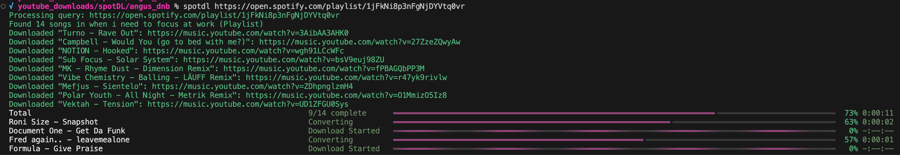

Download Spotify Playlists on Your Mac with spotDL
Welcome, music enthusiasts! This guide is designed to help you easily download Spotify playlists to your Mac using spotdl spotify-downloader, even if you're new to using command-line tools.

Understanding the Basics
What is Terminal?
Terminal is a Mac application used for executing text commands.
- To Open Terminal: Go to Applications > Utilities > Terminal.
Navigating Folders in Terminal
Folders in Terminal are called 'directories'. Use ls to list items and cd to change directories. The Tab key can be used for auto-complete.
Pre-requisites
First, we'll walk you through installing the following:
- Python & pip: Usually pre-installed on Macs. Python
- FFmpeg: Required for processing audio files. FFmpeg
- Homebrew: A package manager for Mac. Homebrew
Installing Homebrew (If not already installed)
Homebrew simplifies the installation of software on Mac.
- Open Terminal and enter the command:
/bin/bash -c "$(curl -fsSL https://raw.githubusercontent.com/Homebrew/install/HEAD/install.sh)" - Follow the on-screen instructions.
- Final Step: Homebrew requires you to add it to your PATH. After installation, you'll see two commands in the Terminal. Copy and paste the entire lines, including the brackets, for each command:
-
(echo; echo 'eval "$(/usr/local/bin/brew shellenv)"') >> /Users/your_username/.profile -
eval "$(/usr/local/bin/brew shellenv)"
/Users/your_username/with your actual username. This step integrates Homebrew into your system. -
Installing FFmpeg
Install FFmpeg using Homebrew:
- In Terminal, type:
brew install ffmpeg
Creating a Download Folder
Instead of using Terminal, you can create a folder in Finder where you want your music downloaded. Right-click on this folder and select 'New Terminal at Folder' to open Terminal directly in this folder. This approach is user-friendly and helps organize your downloads.
Installing spotDL
Let's install spotdl spotify-downloader. It will be installed on your entire system, allowing you to use it from any directory in Terminal.
- In Terminal, type:
For Python 3 users, ifpip install spotdlpipdoesn't work, trypip3 install spotdl. - Note: If you encounter issues during installation, update pip by running
pip install --upgrade pip(orpip3 install --upgrade pipfor Python 3). - spotDL GitHub
Downloading a Spotify Playlist
Ready to download your playlists!
- Get the Spotify playlist URL by clicking the three dots on the playlist in Spotify, 'Share', then 'Copy link to playlist'. Edit the link to remove anything after the "?".
- Example:
https://open.spotify.com/playlist/37i9dQZF1DXcBWIGoYBM5M
- Example:
- In Terminal, type:
Replacespotdl [Clean Spotify Playlist Link][Clean Spotify Playlist Link]with your link.
Troubleshooting Common Issues
- No matches found: Ensure the Spotify link has removed anything after and including the '?'.
- Command Not Found: Make sure
spotdlis installed and restart Terminal. - Download Problems: Check your internet connection or playlist link.
Conclusion
Congratulations! You've downloaded Spotify playlists to your Mac. Any questions or issues? Feel free to comment below. Enjoy your music!
Optional: Downloading Higher Bitrate Music using YouTube Music
For better sound quality, spotdl enables downloads from YouTube Music at 256kbps.
Requirements
- YouTube Music or YouTube Premium: A premium account is required for high-quality streaming.
- High-Quality Streaming Setting: Adjust YouTube Music settings to stream at the highest quality.
Obtaining Cookies
- Extracting Cookies via Developer Tools:
- Open YouTube Music and sign in.
- Access the developer tools (Cmd + Option + I on Mac).
- Navigate to the 'Application' tab and find the cookies under the 'Storage' section.
- Look for cookies related to YouTube or YouTube Music login and save them in a text file.
Setting Up for High-Quality Downloads
- Change Quality Settings in YouTube Music.
- Use the
--cookie-fileoption in yourspotDLcommand, pointing to your cookies file. - Select M4A or OPUS format with the
--formatoption. - Use
--bitrate disableto skip bitrate conversion.
Example Command
spotdl --cookie-file path/to/your/cookies.txt --bitrate disable --audio youtube-music --format=m4a [Spotify Playlist Link]- Replace
path/to/your/cookies.txtwith the actual path to your cookies file, and[Spotify Playlist Link]with your playlist link.
For more details, check the spotDL documentation.